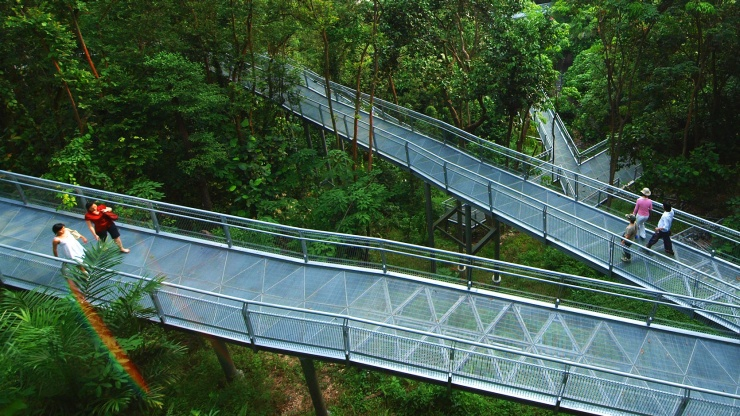

Singapore's most-iconic landmarks
Singapore landmarks
Merlion Park
Singapore Flyer
Helix Bridge
Marina Bay Sands
×
W e l c o m e
This site was created by Sidharth.
Supertree Grove
Located in Gardens by the Bay
Chinatown
A tapestry of cultural diversity
Orchard Road
A great street

Southern Ridges
A 10-km park-connector trail
Previous
Next